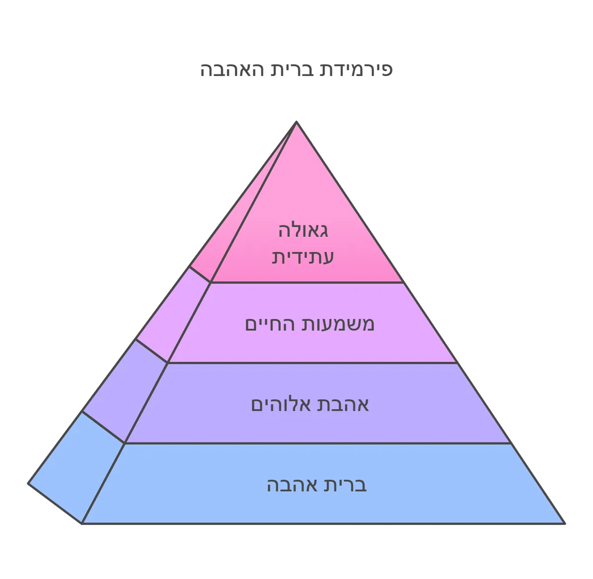

עומק הנישואין: מבט על ברית האהבה בין השי"ת וכנסת ישראל
בואו נתבונן יחד בעומק מופלא הטמון במהות הנישואין, ודרכו נבין סוד גדול בכל תכלית הבריאה ומהות עבודת ה'.
מהות הנישואין: ברית אהבה נצחית
הנה, כשנתבונן בעומק, נראה שנישואין אינם רק הסכם טכני או חוזה עבודה. מהותם העמוקה היא כריתת ברית של אהבה - התקשרות פנימית ועמוקה בין שתי נשמות. וכאן טמון המפתח להבנת כל מהות היהדות.
היהדות כברית אהבה
התורה והמצוות אינן מערכת של "תן וקח", של שכר ועונש בלבד. זוהי תפיסה שטחית המחמיצה את העומק האמיתי. כפי שאמר הקב"ה: "ואשא אתכם על כנפי נשרים ואביא אתכם אלי" - הנה לנו התכלית האמיתית: הקרבה והדבקות בהשי"ת.
העולם הזה: מקום יצירת הקשר
כאן מתגלה עומק חדש בהבנת העולם הזה. אין זה רק "פרוזדור לטרקלין", מקום זמני לצבירת זכויות. זהו המקום הקדוש שבו נרקמת ברית האהבה בין כנסת ישראל לאביה שבשמים, מאה ועשרים שנה של בניית קשר אמיתי ועמוק.
שבע ברכות: ביטוי להודיה והתעלות
ומכאן נבין את עומק תקנת שבע ברכות. כשם שבברכת רבקה - "אחותנו את היי לאלפי רבבה" - טמונה ברכה עמוקה שמתגשמת בכל דור, כך גם בשבע ברכות אנו לא רק מברכים את החתן והכלה, אלא מרוממים אותם למדרגה של הכרה בחסד ה' והודיה עמוקה על הברית המופלאה הזו.
הגאולה: שיא ההתקשרות
וזהו סוד הגאולה העתידה, כמו שנאמר "עוד ישמע... קול ששון וקול שמחה". כי בגאולה תתגלה במלואה אותה ברית אהבה נצחית בין הקב"ה וכנסת ישראל, ואז יתמלא העולם בקול תודה וזמרה.
האם לא נפלא לראות כיצד כל פרט בחיינו, מהנישואין הפרטיים ועד לגאולה הכללית, הכל סובב סביב אותה נקודה עמוקה של ברית אהבה עם השי"ת?